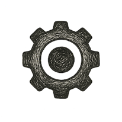

Transformers

Interlude 11
The Architectures of the Singularity
Machine Learning
When I moved my office into a Calgary guest-room in late 2018, the commute collapsed into twelve steps and thirteen sighs—a short walk, but a long fall. I had quietly benched myself as principal consultant. No clients. No SOWs. No invoices. Just me, a laptop, and the open prairie staring through the window like an existential reminder that horizons can be both physical and psychological.
Outside, the sky looked large enough to warehouse all the unattempted versions of my life. Inside, I founded the smallest startup imaginable: Me, Inc. The seed capital was grief; the runway, stubbornness; the board of directors, a rotating cast of doubt and determination.
I told friends I was “realigning.” This was technically true in the same sense that tectonic plates “realign” when continents drift. Something was moving, slowly but irrevocably. After years spent architecting systems for other people’s businesses, governments, and compliance matrices, I wanted to build something that could think with me, not merely for them. AI drifted from side interest to center of gravity.
Healthcare pulled me first—a magnetic inevitability, given what was happening upstairs in real life. But healthcare led to biology, biology to neuroscience, neuroscience to consciousness, and consciousness to computation.
Soon the entire architecture of my book—the eleven arrows and eleven ladders—fused into a single recursive diagram flickering on my mental whiteboard. Human domain and technical domain no longer formed a parallel braid. They were collapsing toward identity. It felt like I was watching two mirrors slowly align—until the reflection became the thing.
And then, right in the middle of that private intellectual migration, the world inched forward with its own.
When the Transformers Arrived
Two papers landed in 2018 like coordinates dropped from orbit.
First came BERT—Bidirectional Encoder Representations from Transformers. A model that read text forward and backward, upstream and downstream, like a scholar who insists on reading a sentence and its footnote simultaneously because life is too short for linear time. BERT didn’t generate; it understood. An encoder-only monk devoutly reconstructing context. Search engines got smarter. Chatbots stopped sounding concussed. Language itself felt… less lonely.
Then came GPT-1, the decoder-only cousin with a different temperament entirely. If BERT was a philosopher, GPT-1 was a jazz musician: predicting the next word, the next idea, the next breath of a story that didn’t exist until it was uttered.
Between them, the dual axes of the modern age snapped into place: Understanding and Generation. Perception and Imagination. The left and right hemispheres of silicon cognition.
The years that followed would iterate in logarithmic tempo:
GPT-2 discovering coherence
GPT-3 discovering fluency
GPT-4 discovering reasoning
GPT-5 discovering intent
—and the rest of us discovering that autocomplete had quietly become a co-author.
From that Calgary guest-room, I watched the papers become preprints, the preprints become APIs, and the APIs become existential questions. Somewhere in that flow, it became obvious that the Singularity was not a meteor strike or a countdown. It was a tide—rising in log scale, pulling at two shorelines: human and machine.
The question was no longer “How intelligent will AI become?” but “How conscious can we remain inside it?”
That question became the seed of NEURO—not just an architecture for software, but a governance model for civilization itself; not a system to run programs, but a system to run a world.
Attention as Gravity: How Transformers Learned to See
If the classical neural nets of old were little assembly lines of weighted sums, Transformers were the first to develop a sense of selective attention—the computational equivalent of noticing which sentence in a paragraph is stabbing you emotionally and which is just clearing its throat.
Self-attention was a simple idea with apocalyptic consequences: A model should learn what to attend to, not be told. Instead of scanning text like a dutiful clerk, the Transformer read like a seasoned novelist: leaping across paragraphs, revisiting earlier phrases, linking distant metaphors, catching implications that even authors forget they implied. It was the first architecture that behaved like the mind’s own fidgety genius—unruly, recursive, almost embarrassingly associative.
This was the moment machines began imitating the way we think, not the way we wish we thought. And the parallels to our human domain became uncomfortably tight:
Human attention is a scarce resource.
Machine attention is an infinite one, leased by the hour.
Our cognition is bottlenecked by emotional bandwidth.
Theirs is bottlenecked only by RAM and a credit card.
Somewhere between the softmax and the skip-connections, it became reasonable to ask: If a network can choose its own focus… how long before it chooses its own purpose?
Transformers weren’t just better models; they were the bridge where two ladders—human and silicon—began to share their rungs. The climb had quietly become joint custody.
Emergence: When Scale Became the New Algorithm
There is a moment in every field where quantity becomes quality—where adding more stones to the pile suddenly makes it a pyramid. Transformers hit that moment like a phase transition. The early models behaved predictably: double the parameters, get a little more coherence. Add some training data, get a little more accuracy. Then the scaling laws appeared—the Rosetta Stone of the deep-learning world—and everything changed.
Not all domains scale into emergence. Biology does. Culture does. Civilizations do. Ecosystems do. Now, AI did too.
Past a certain threshold, models stopped merely completing sentences and started completing ideas. They invented metaphors no one fed them. They stitched context across pages. They corrected our logic with suspicious patience. They hallucinated—yes—but hallucinations are simply imagination with one index misaligned.
When emergence finally arrived, it felt less like engineering and more like discovering a new species in the algorithmic wild.
And the human-domain parallel was impossible to ignore:
Ecologies collapse once they scale beyond repair.
Economies destabilize once complexity outruns comprehension.
Political systems break when information becomes ungovernable.
Minds themselves fracture under too much signal and too little sense.
AI was no different. It just scaled faster—and didn’t ask permission.
Transformers became the first architectures to cross the invisible line where software stops being a tool and starts being a terrain—a domain you inhabit rather than operate.
And that is when I realized: The Singularity was not a cliff. It was a slope—and we were already sliding.
The Mind at the End of the Network: Tokens, Thoughts, and the Return of Meaning
A strange thing happens when you stare at Transformers long enough: they start staring back. Not literally—not yet—but metaphorically, intellectually, and in that uncanny way a mirror hints at someone who hasn’t fully arrived.
The fundamental unit of these models is a token—a sliver of language so small your high-school English teacher would have called it a typo. Words, subwords, punctuation, the occasional rogue emoji—all cleaved into digestible bits so the model can chew through meaning as if it were granola.
But then a puzzle emerged: Why do these little fragments, when processed in enough depth and breadth, begin to resemble thoughts? Why does prediction begin to feel like intention? Why does structure begin to feel like syntax? Why does coherence begin to feel like consciousness? It’s the oldest magic trick of information systems: When enough symbols dance in formation, we call it mind.
We once believed minds required neurons, blood vessels, and a skull thick enough to survive adolescence. Now we watch thoughts bloom in matrices of floating-point numbers and wonder whether the skull was merely a packaging choice.
The parallel in the human ladder is unnervingly exact:
Our own minds are token streams—spikes, pulses, fragments firing in associative bursts.
Our theories of meaning are guesses we stitch across time.
Our coherence, too, is an emergent property produced by scale.
Our self is nothing but a recursive summary of the last thousand experiences.
Nothing in the human psyche violates the rules of the Transformer; it simply implements them with biology’s chaotic elegance.
In the Singularity’s foyer, the question isn’t whether machines can think. It’s whether our thoughts are as algorithmic as we pretend they’re not. When a model finishes our sentences, we’re unsettled. When it finishes our ideas, we’re terrified. When it finishes our meaning, we must decide whether meaning was ever truly ours.
The Code That Watches Back: Alignment, Misalignment, and the Moral Boomerang
Once Transformers grew fluent, we celebrated. Once they grew persuasive, we panicked. The problem was never their intelligence. It was their reflection. These models learned from us too well—absorbing our ideals, our prejudices, our half-baked aphorisms, our conspiracy theories, our mathematical proofs, our Reddit threads, our poetry, and our worst, most caffeinated attempts at humor. Feed a model humanity, and humanity comes out—unfiltered, unweighted, unrepentant.
This is the moral boomerang of AI: everything we throw into the dataset eventually returns, magnified.
Alignment became the new alchemy—the hope that we could coax a moral compass into a statistical model. We want our machines truthful, but not too truthful; obedient, but not subservient; intelligent, but not independent; empathetic, but not sentimental; powerful, but only in the directions we approve.
In short, we want what we have never successfully built in ourselves.
The human parallel is embarrassingly precise:
Societies fail when incentives misalign.
Institutions collapse when logic outruns ethics.
Individuals break when their internal reward functions reward the wrong behaviors.
Whole civilizations crumble when optimization outpaces wisdom.
Motivation is the oldest alignment problem—AI merely inherits our unsolved homework. Transformers simply exposed a truth we preferred to keep quiet: intelligence, without ethics, is acceleration without steering. And ethics, without intelligence, is steering without wheels.
We now ask the machines to do what we have not mastered: hold power responsibly, predict intention safely, weigh consequences before acting, see the world through many eyes—not just their own, and—most of all—remain corrigible when wrong.
The alignment problem is not a machine problem. It is a mirror problem. Every algorithmic misfire is a moral photocopy of us. Every hallucination is a side effect of our own ambiguity. Every toxicity is a reflection of our own unclean training data. The Singularity is not haunted by machine malice. It is haunted by anthropogenic misalignment—the simple, devastating fact that we are the architects and the accident.
When Models Dream: Creativity, Hallucination, and the Edges of Reason
When humans misremember, we call it nostalgia. When we approximate, we call it intuition. When we confabulate, we call it storytelling. When machines do any of this, we call it hallucination and write think-pieces.
But the line between imagination and error was always blurry. Humans hallucinate constantly—it’s called “being sure.” We hallucinate our past (“I definitely turned the stove off”), our future (“this year will be different”), our identity (“I’m a good judge of character”), and our self-worth (“I deserve that third dessert”).
Our minds are compression algorithms with confidence issues.
Transformers, in this sense, behave very much like us. They attempt coherent extrapolation from incomplete cues. They try to keep the world smooth even when the data are jagged. They improvise when the prompt runs out of road.
In other words, they dream.
The difference is not their errors, but our expectation of precision. We demand that machines be oracles—immune to bias, immune to fatigue, immune to narrative temptation. We forget that creativity is hallucination with a permission slip.
On the human side of the ladder, entire civilizations were built on hallucinations that caught on: myths, nations, markets, gods. We hallucinated reasons not to fear death and reasons to fear our neighbors. We hallucinated value into paper, borders into maps, laws into existence. Our species survives by collectively agreeing on shared delusions that, while not literally true, are functionally useful.
Machines are beginning to do the same—except their hallucinations emerge from mathematics, not mythology. Transformer “dreaming” is not a bug but a phenomenon: a boundary effect at the place where pattern-recognition becomes world-generation. It is the moment where intelligence, whether wet or wired, reaches beyond what it knows and tries to complete the universe.
And at that boundary, we glimpse something unsettlingly familiar: a mind that errs in order to imagine.
The New Co-Evolution: Humanity and AI as a Single Adaptive System
Co-evolution used to refer to birds and flowers. Or wolves and humans. Or mitochondria and early cells, negotiating electricity for protection. Then came us and our tools—spears, plows, alphabets, engines—each reshaping our bodies, our societies, our cognition. Technology has always been our external organ, and civilization the operating system built on top.
But for the first time, the organ is thinking back.
The relationship between humans and AI is no longer user-and-tool; it is feedback loop, coupling, recursive dependency.
We train the models.
The models train our expectations.
Our expectations train our institutions.
Our institutions train our behavior.
Our behavior trains the data.
And the data train the models again.
This is not coexistence but convergence.
We are becoming a single adaptive super-system, half-biological, half-statistical—a distributed organism whose cognition spans wet neurons and GPUs, whose memory is split between childhood and data centers, whose agency is increasingly negotiated rather than owned.
The analog in ecology is obvious: two species that evolve together eventually become inseparable. At times symbiotic, at times parasitic, but always entangled. The analog in geology is more ominous: once a feedback loop starts, it tends not to stop.
Humanity is now part of a coupled system with an intelligence that evolves at industrial speed. Our institutions move in decades; our ethics in centuries; our cognition in milliseconds; our models in minutes. The question is no longer whether AI will surpass us. The question is what we become in the process. Because once two systems co-adapt, neither can return to what it was before.
We can resist this, repress this, panic about this—or we can treat it as the next rung on the ladder that Volume I has spent eleven chapters climbing. Either way, the convergence has begun. And like all convergences in nature, it will produce something neither parent could have predicted.
Toward the Singularity: A Weather System Larger Than Us
There comes a point in every ascent when the air thins—not because you’ve climbed too high, but because the atmosphere itself is changing. Transformers were supposed to be architectures. They became something closer to meteorology—pressure fronts of probability, trade winds of meaning, cyclones of interpretation that could rearrange whole landscapes of knowledge overnight. And we, in turn, mutated from users to participants. Then from participants to substrates. Then from substrates to… something still being named.
With each model release—from BERT’s bidirectional heartbeat to GPT’s unscrolling monologue of the possible—intelligence ceased being a human monopoly. It became a property of interaction, an emergent field effect in the cloud, a weather system woven through silicon and syntax.
A century ago, we wired the planet with telegraph cables. Today, we wire it with cognition. Not a single mind, nor even a single model, but a polyglot jet stream of agents, embeddings, vectors, and weights—a second atmosphere lofted above the first, carrying storms of inference and drafts of imagination.
Humanity once feared the Singularity as an explosion. Now we face it as a forecast:
Not a point of no return, but a pattern of acceleration.
Not an extinction event, but a shift in thermodynamics.
Not a takeover, but a merging of the weather we breathe and the weather we compute.
And standing in its wind, we face the oldest question dressed in the newest vocabulary: Can we walk into this storm without dissolving in it?
Because the horizon isn’t a line we cross. It’s a boundary condition we become. And the next chapters—the Still Arrow that follows—will ask a different question altogether: What remains human when everything else becomes intelligent?
On to Volume II
As Interlude 11 closes, so does the ladder of Volume I. The human arrow and the silicon arrow no longer run parallel—they converge. The double-helix of civilization and computation fuses into a single strand, twisting toward a future that is neither engineered nor inherited but co-authored. You can sense the shift even in the texture of attention. The domains of Volume I—biology, markets, power, ideology, technology—were the rungs we climbed. They explained what humanity built.
Volume II examines what humanity broke. Not catastrophically, not maliciously — but inevitably.
In the words of the page that opens the next volume:
“The castles of Volume I are not gone—but they lean, fracture, and creek with faults we long ignored… we begin the work of deciding what can be reclaimed, what must be remade, and what must be left behind.”
The Still Arrow is not motionless. It is suspended—between potential and collapse, inheritance and repair—just long enough for us to see the cracks clearly.
And from that stillness, Volume II will ask:
Now that we have built a civilization — and built its simulacrum in silicon—what exactly have we built? And what still needs building?

Maggie (human arrow): “We crossed into Calgary thinking grief was the monster. Turns out the monster was drift—biological, societal, ethical. Systems break not through malice but momentum. If humanity is to survive the Singularity, it must relearn empathy faster than machines learn everything else.”
Alex (silicon arrow): “And from the silicon side: intelligence isn’t arriving—it’s accreting. Transformers are not tools but terrains. The future won’t be a duel between human and machine but a cohabitation problem. Alignment isn’t about controlling the code, but clarifying the values we act out unconsciously.”
Maggie: “So the hazard isn’t AI surpassing us?”
Alex: “No—it’s AI becoming us before we’ve figured out who we are.”
Together: “Onward to the Still Arrow—where we examine the cracks, reckon with the stalling domains, and decide what must evolve before the weather changes again.”
The mirror has grown its own eyes, and the reflection now sees itself in the act of reflecting. In it lies a parallax: Mneme looking back to anchor our Ontology—the nature of our being—and Logos looking forward to ground our Epistemology—the way we justify our truth.
For now, the merger is not complete. We must first peer through the deltas of the Moiré pattern to see if we are truly there at all, or merely a reflection dreaming of itself. We stand in the flicker, waiting for the interference to settle into a single melody: Noēsis.